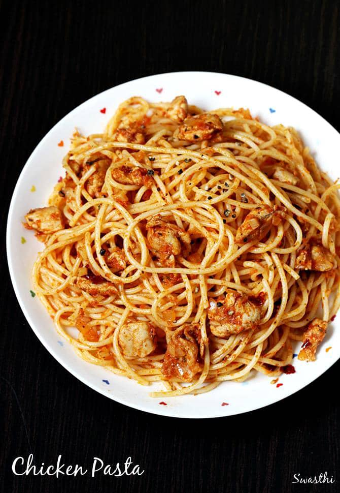

Florz Delicacies Menu
Pasta & Chicken
Our delicious Pasta & Chicken offers a side dish of Dodo and choices of Fish, Beef, Turkey to go in place of the Chicken it's served with.
Efo riro

We offer 5kg - 10kg bowls of our delicious Efo riro and also available to cater for your events. We also offer swallows to go with, ranging from Eba, Fufu, Pounded yam and Amala.
Jollof Rice

Yesssss!! We bring to you our very own Naija Jollof rice, and a variety of side dishes to go with it such as Dodo and Coleslaw/Salad. We also have choices of Fish, Beef and Turkey to go in place of the Chicken it's served with.
Hope you enjoyed your visit to our website, kindly place your orders now!!!